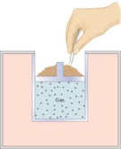

Isothermal reversible expansion or compression of a closed ideal gas
Let us consider the reversible isothermal expansion of a monoatomic ideal gas from the state (Vi, T) to the state (Vf, T) where Vf > Vi. The gas is placed in thermal contact with a heat reservoir at the temperature T, and by slowly reducing the weight on the piston by removing one grain of sand at a time, the pressure exerted by the gas is only infinitesimally greater than the instantaneous pressure exerted by the piston on the gas. The gas passes through a continuum of equilibrium states in going from the state (Vi, T) to (Vf, T). Since the process is never out of equilibrium, the process is reversibile.
From the First Law
ΔU = q + w
We have seen that the internal energy of an ideal gas depends only on its temperatura. Hence Δ U = 0, and thus q = −w; that is, the work done by the exanding gas on the piston equals the heat absorbed from the environment into the gas. This is an example of a process in which the heat absorbed is converted entirely into work with 100 percent efficiency. The process does not violate fundamental limitations on efficiency, however, because a single expansion by itself is not a cyclic process. The added heat must end up as work done on the surroundings.
We have already calculated the work as:
Since Vf > Vi is a positive quantity, in accordance with the fact that work is done by the gas.